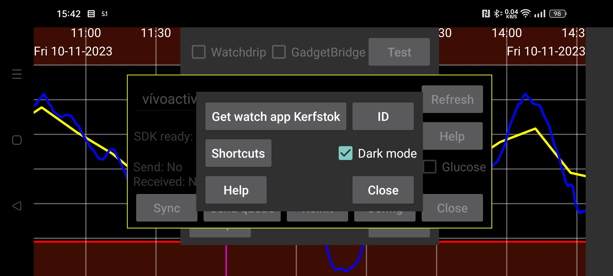

The source of Kerfstok can be downloaded from https://www.juggluco.nl/Kerfstok/Kerfstok-source.html). Users are free to modify it. Each watch app has a unique identifier. If the identifier is different from the default, Juggluco needs to know it to communicate with the watch app. To specify a different identifier press ID and type the 32 character hex string. Juggluco on one device can only be connected to one watch app on one watch. Changes will lead to loss of data.
Shortcuts are sent to the Garmin watch app Kerfstok to easily insert certain values.
When the Garmin watch is running Libre 3 Kerfstok, you can here configure glucose alarms for the watch.
Specify if Kerfstok should be white on black instead of black on white.